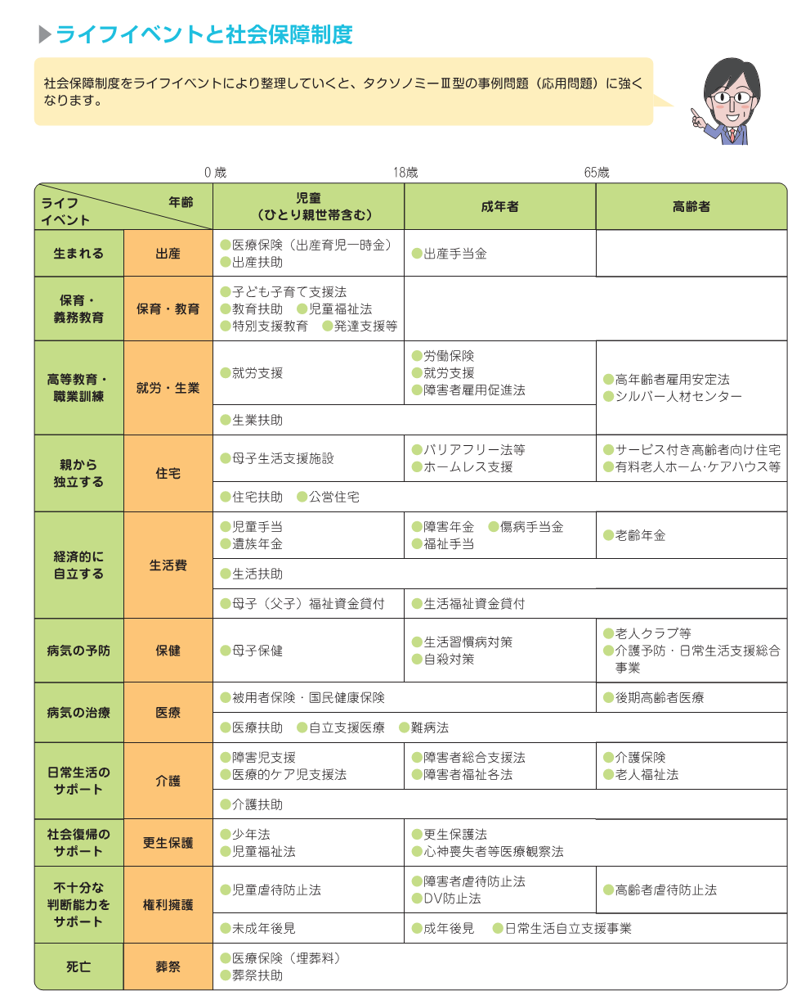

社会福祉士国家試験 第34〜38回
事例問題の分析
出題傾向
新科目では、事例問題の割合が
第38回の事例問題
事例問題は大きく分けて、
知識系と対応系の
2つに分かれます。
事例問題の対策
合格に向けた事例対策のポイント
-
対応系は正答率100％を目指す
第38回なら、対応系の全15問に正解すれば15点です。「黄金の法則」を使って、なぜその対応を選ぶのか、自信を持って説明できるようにしましょう。
-
知識系は社会保障制度を得意分野に
「誰が、どんなときに、どの給付やサービスを受けられるか」。この3つを軸に制度を体系的に整理し、事例の人物に当てはめて考えましょう。
苦手になりやすい
社会保障の事例こそ、
他の受験生と差がつくところ！
ここから一緒に整理しましょう。
ライフイベントと社会保障制度
「Aさんは何歳ですか？」「何に困っていますか？」
この2つを掛け合わせると、制度を科目の枠を越えて整理できます。まずは、出産から葬祭までの人生の流れをたどってみましょう。
-
生まれ、学び、働く準備をする
出産から保育・教育へ。高校生の頃からは、進学や職業訓練を通じて就労・生業へと進む道もあります。自分が子どもとして生まれ育つ家族を「定位家族」といいます。
赤ちゃん 小学生 高校生 -
親元を離れ、暮らしを築く
親元から独立するときは、部屋を借りるなどして住宅を確保し、働いて生活費をまかないます。結婚などを通じて自分が新たに築く家族を「創設家族」といいます。
創設家族 -
健康を守り、日々の生活を支える
健診などで病気を予防するのが保健。病気やけがを治療するときは医療保険が支えます。食事や入浴などに介護が必要になったら、介護保険や障害者総合支援法のサービスを考えます。
保健 医療 -
社会復帰や権利を支え、最期を迎える
罪を犯した人の社会復帰を支えるのが更生保護です。認知症などで判断能力が低下し、契約や金銭管理に困ったときは、成年後見制度などの権利擁護を考えます。人生の最後には、死亡に伴う葬祭への支援があります。
更生保護 権利擁護 葬祭
年齢の目安児童 18歳未満成人 18〜64歳高齢者 65歳以上
事例で読むと 第38回問51のCさんは70歳。住まいの建て替えで立ち退きを求められ、保証人のことで困っています。「高齢者」と「住宅」が交わるところから考えると、住まい探しや入居手続きを支援する居住支援法人が候補に挙がります。
年齢別の制度を講義図で見る
縦にライフイベント、横に年齢を見ます。交わる欄が制度を探す手がかりです。実際の利用条件は制度ごとに確認します。
